Chemical

A caption
ACTIVIDAD ANTI OXIDANTE (aao %) 2019
## site phenotype N aao25 sd se ci
## 1 concordia 154 4 48.7725 9.2815206 4.6407603 14.768971
## 2 concordia 156 4 31.3475 6.4819358 3.2409679 10.314206
## 3 concordia 161 4 32.1350 9.9266023 4.9633012 15.795439
## 4 concordia 171 4 79.6700 12.3662471 6.1831235 19.677459
## 5 concordia 174 4 63.2275 5.3320939 2.6660469 8.484551
## 6 concordia 175 4 86.3925 14.6883886 7.3441943 23.372504
## 7 concordia 178 4 95.5025 0.8723675 0.4361837 1.388131
## 8 concordia 185 4 92.2150 2.5216463 1.2608231 4.012502
## 9 concordia 193 4 94.5200 2.0234789 1.0117394 3.219806
## 10 concordia 197 4 56.4650 12.1143290 6.0571645 19.276601
## 11 concordia 198 4 21.2475 5.5499392 2.7749696 8.831192
## 12 concordia 199 4 32.6975 3.9451521 1.9725760 6.277617
## 13 concordia 208 4 95.8075 0.6604733 0.3302367 1.050960
## 14 palmar 260 4 35.4050 2.4689741 1.2344871 3.928689
## 15 palmar 261 4 34.0000 10.7144420 5.3572210 17.049068
## 16 palmar 262 4 44.8575 7.5315929 3.7657965 11.984445
## 17 palmar 268 4 35.4825 12.7439119 6.3719560 20.278408
## 18 palmar 271 4 31.4100 9.2815085 4.6407542 14.768951
## 19 palmar 272 4 44.4400 19.2901356 9.6450678 30.694910
## 20 palmar 274 4 35.2325 7.4341885 3.7170942 11.829453
## 21 palmar 276 4 27.8900 14.8911652 7.4455826 23.695167
## 22 palmar 280 4 55.4575 16.5807265 8.2903633 26.383636
## 23 palmar 281 4 91.9750 4.7918716 2.3959358 7.624937
## 24 palmar 284 4 59.0050 9.6829420 4.8414710 15.407722
## 25 palmar 285 4 89.2325 11.2582188 5.6291094 17.914338
## 26 palmar 286 4 70.8050 13.4317745 6.7158873 21.372951
## 27 palmar 287 4 28.5525 2.9239172 1.4619586 4.652605
## 28 palmar 288 4 35.8450 7.0315361 3.5157681 11.188743
## 29 palmar 289 4 16.3950 4.3521834 2.1760917 6.925295
## 30 gualeguaychu 305 4 44.1525 2.3941230 1.1970615 3.809584
## 31 gualeguaychu 306 4 45.5375 28.8662483 14.4331242 45.932643
## 32 gualeguaychu 321 4 82.6500 0.9018500 0.4509250 1.435045
## 33 gualeguaychu 324 4 79.0550 15.0185341 7.5092671 23.897839
## 34 gualeguaychu 325 4 94.8975 1.4574493 0.7287246 2.319127
## 35 gualeguaychu 331 4 45.3850 2.8219438 1.4109719 4.490342
## 36 gualeguaychu 337 4 92.6950 1.6655830 0.8327915 2.650314
## 37 gualeguaychu 362 4 65.5625 11.0655784 5.5327892 17.607805
## 38 gualeguaychu 363 4 21.4700 5.3737758 2.6868879 8.550877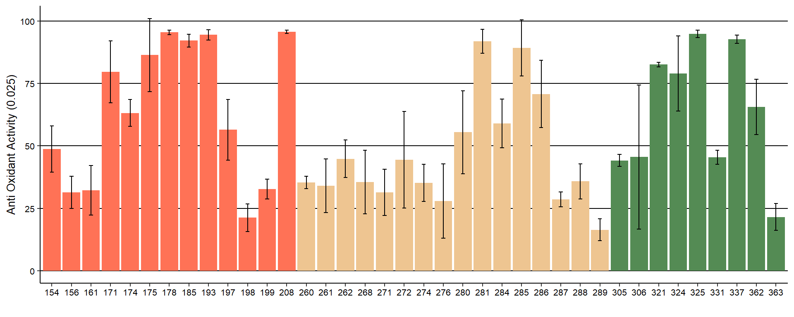
## Linear mixed model fit by REML. t-tests use Satterthwaite's method ['lmerModLmerTest']
## Formula: aao25 ~ 1 + (1 | site/phenotype)
## Data: datavqaao25
##
## REML criterion at convergence: 1253.1
##
## Scaled residuals:
## Min 1Q Median 3Q Max
## -3.8863 -0.4215 0.0401 0.3193 2.9571
##
## Random effects:
## Groups Name Variance Std.Dev.
## phenotype:site (Intercept) 602.7 24.550
## site (Intercept) 65.0 8.062
## Residual 102.9 10.143
## Number of obs: 152, groups: phenotype:site, 38; site, 3
##
## Fixed effects:
## Estimate Std. Error df t value Pr(>|t|)
## (Intercept) 57.118 6.222 2.166 9.18 0.00901 **
## ---
## Signif. codes: 0 '***' 0.001 '**' 0.01 '*' 0.05 '.' 0.1 ' ' 1## [1] 13.35015## [1] 78.21456## [1] 8.435292## # Intraclass Correlation Coefficient
##
## Adjusted ICC: 0.866
## Conditional ICC: 0.866fenOLES 2019
## site phenotype N fen sd se ci
## 1 concordia 154 4 330.6050 84.89474 42.44737 135.08647
## 2 concordia 156 4 266.1275 32.92447 16.46223 52.39018
## 3 concordia 161 4 308.8750 111.90871 55.95436 178.07173
## 4 concordia 171 4 369.2500 117.61965 58.80983 187.15911
## 5 concordia 174 4 299.3925 126.00040 63.00020 200.49475
## 6 concordia 175 3 1763.0133 1454.05849 839.50106 3612.08154
## 7 concordia 178 4 1284.0950 482.90971 241.45486 768.41712
## 8 concordia 185 4 973.5525 261.33124 130.66562 415.83633
## 9 concordia 193 4 850.8250 387.56623 193.78312 616.70437
## 10 concordia 197 4 492.7550 343.45082 171.72541 546.50689
## 11 concordia 198 4 215.3775 76.91037 38.45518 122.38156
## 12 concordia 199 4 190.3225 58.31186 29.15593 92.78718
## 13 concordia 208 4 1499.2950 338.66293 169.33146 538.88829
## 14 palmar 260 4 355.7675 22.76823 11.38411 36.22933
## 15 palmar 261 4 370.6275 77.55367 38.77684 123.40520
## 16 palmar 262 4 441.8700 63.74983 31.87492 101.44021
## 17 palmar 268 4 346.6375 111.75313 55.87657 177.82417
## 18 palmar 271 4 314.4650 56.05878 28.02939 89.20203
## 19 palmar 272 4 451.9025 121.91657 60.95829 193.99647
## 20 palmar 274 4 589.1225 306.99850 153.49925 488.50312
## 21 palmar 276 4 323.5975 78.72810 39.36405 125.27397
## 22 palmar 280 4 434.6500 59.12521 29.56260 94.08140
## 23 palmar 281 4 874.8175 100.54569 50.27284 159.99063
## 24 palmar 284 4 567.2000 210.44344 105.22172 334.86247
## 25 palmar 285 4 424.0850 21.19826 10.59913 33.73116
## 26 palmar 286 4 393.7750 58.97843 29.48921 93.84784
## 27 palmar 287 4 207.3425 24.35178 12.17589 38.74912
## 28 palmar 288 4 425.9425 31.45324 15.72662 50.04913
## 29 palmar 289 4 249.4925 88.72986 44.36493 141.18901
## 30 gualeguaychu 305 4 229.7450 41.04017 20.52008 65.30406
## 31 gualeguaychu 306 4 2252.8675 1020.90017 510.45009 1624.47999
## 32 gualeguaychu 321 4 488.2625 68.35044 34.17522 108.76080
## 33 gualeguaychu 324 4 1071.5450 534.93840 267.46920 851.20637
## 34 gualeguaychu 325 4 1528.2750 140.20876 70.10438 223.10343
## 35 gualeguaychu 331 4 628.9350 91.51873 45.75937 145.62672
## 36 gualeguaychu 337 4 2352.1350 419.93937 209.96968 668.21725
## 37 gualeguaychu 362 4 997.4425 315.62551 157.81275 502.23061
## 38 gualeguaychu 363 4 602.1825 154.22211 77.11106 245.40180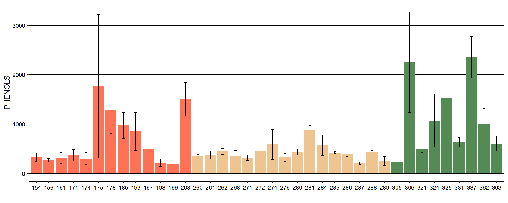
## Linear mixed model fit by REML. t-tests use Satterthwaite's method ['lmerModLmerTest']
## Formula: log(fen) ~ 1 + (1 | site/phenotype)
## Data: datavqfen
##
## REML criterion at convergence: 200
##
## Scaled residuals:
## Min 1Q Median 3Q Max
## -3.1789 -0.5423 -0.0378 0.5447 3.1121
##
## Random effects:
## Groups Name Variance Std.Dev.
## phenotype:site (Intercept) 0.3325 0.5767
## site (Intercept) 0.1320 0.3634
## Residual 0.1120 0.3347
## Number of obs: 151, groups: phenotype:site, 38; site, 3
##
## Fixed effects:
## Estimate Std. Error df t value Pr(>|t|)
## (Intercept) 6.2846 0.2323 1.8999 27.06 0.00178 **
## ---
## Signif. codes: 0 '***' 0.001 '**' 0.01 '*' 0.05 '.' 0.1 ' ' 1## [1] 19.43098## [1] 57.67135## [1] 22.89767## # Intraclass Correlation Coefficient
##
## Adjusted ICC: 0.806
## Conditional ICC: 0.806CLOROFILA A 2019
## site phenotype N cloa sd se ci
## 1 concordia 154 4 3.0806165 1.0584424 0.5292212 1.6842181
## 2 concordia 156 4 5.1162604 4.1110365 2.0555182 6.5415764
## 3 concordia 161 4 13.4258336 11.1712407 5.5856204 17.7759369
## 4 concordia 171 4 0.9313898 0.6490724 0.3245362 1.0328190
## 5 concordia 174 4 10.8919402 6.8683578 3.4341789 10.9290899
## 6 concordia 175 4 6.9389779 4.8160855 2.4080428 7.6634668
## 7 concordia 178 4 5.0970850 3.0303770 1.5151885 4.8220061
## 8 concordia 185 4 5.7954863 4.5262925 2.2631462 7.2023414
## 9 concordia 193 4 2.3527021 1.8316863 0.9158432 2.9146217
## 10 concordia 197 4 5.6547631 4.9460334 2.4730167 7.8702428
## 11 concordia 198 4 1.4438871 1.3600873 0.6800436 2.1642024
## 12 concordia 199 4 3.6885536 1.9695502 0.9847751 3.1339939
## 13 concordia 208 4 10.5256613 3.1765457 1.5882728 5.0545930
## 14 palmar 260 4 5.4515710 2.1997342 1.0998671 3.5002679
## 15 palmar 261 4 3.7180486 0.6761617 0.3380809 1.0759242
## 16 palmar 262 4 12.4180686 4.0394304 2.0197152 6.4276351
## 17 palmar 268 4 7.1220421 3.1860081 1.5930041 5.0696499
## 18 palmar 271 4 4.3785912 1.7381890 0.8690945 2.7658466
## 19 palmar 272 4 3.5485052 3.8735642 1.9367821 6.1637051
## 20 palmar 274 4 4.7705467 5.7208935 2.8604467 9.1032182
## 21 palmar 276 4 3.0584173 1.6144084 0.8072042 2.5688840
## 22 palmar 280 4 3.0704669 1.2053307 0.6026653 1.9179501
## 23 palmar 281 4 2.3054605 0.4304287 0.2152143 0.6849081
## 24 palmar 284 4 1.9436534 0.4601721 0.2300861 0.7322366
## 25 palmar 285 4 3.1102243 0.9059478 0.4529739 1.4415651
## 26 palmar 286 4 3.6044037 1.8890766 0.9445383 3.0059424
## 27 palmar 287 4 6.9408897 2.6771617 1.3385809 4.2599617
## 28 palmar 288 4 12.9767616 1.4448895 0.7224448 2.2991416
## 29 palmar 289 4 0.6928340 0.5002924 0.2501462 0.7960768
## 30 gualeguaychu 305 4 4.9209187 4.2235542 2.1117771 6.7206172
## 31 gualeguaychu 306 4 47.6222192 6.1698285 3.0849143 9.8175740
## 32 gualeguaychu 321 4 10.1841308 4.2033792 2.1016896 6.6885143
## 33 gualeguaychu 324 4 17.3612552 1.2799607 0.6399804 2.0367031
## 34 gualeguaychu 325 4 24.2568440 2.0809943 1.0404972 3.3113263
## 35 gualeguaychu 331 4 27.0976710 2.1300190 1.0650095 3.3893355
## 36 gualeguaychu 337 4 15.1010173 1.8241230 0.9120615 2.9025867
## 37 gualeguaychu 362 4 17.2662271 2.6262613 1.3131307 4.1789678
## 38 gualeguaychu 363 4 9.1579455 2.3616145 1.1808073 3.7578557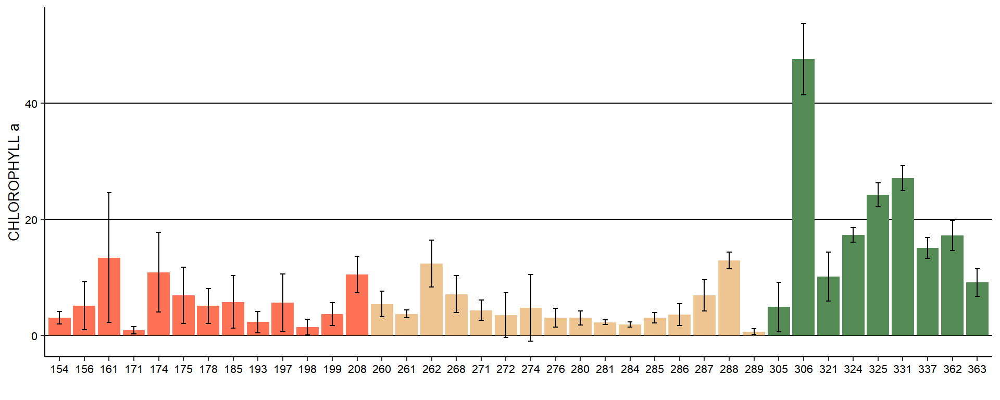
## Linear mixed model fit by REML. t-tests use Satterthwaite's method ['lmerModLmerTest']
## Formula: sqrt(cloa) ~ 1 + (1 | site/phenotype)
## Data: datavqcloa
##
## REML criterion at convergence: 390.7
##
## Scaled residuals:
## Min 1Q Median 3Q Max
## -2.3708 -0.5074 -0.0501 0.4438 3.1785
##
## Random effects:
## Groups Name Variance Std.Dev.
## phenotype:site (Intercept) 0.7915 0.8896
## site (Intercept) 1.3064 1.1430
## Residual 0.4307 0.6563
## Number of obs: 152, groups: phenotype:site, 38; site, 3
##
## Fixed effects:
## Estimate Std. Error df t value Pr(>|t|)
## (Intercept) 2.7763 0.6785 1.9643 4.092 0.0566 .
## ---
## Signif. codes: 0 '***' 0.001 '**' 0.01 '*' 0.05 '.' 0.1 ' ' 1## [1] 17.03305## [1] 31.30128## [1] 51.66567## # Intraclass Correlation Coefficient
##
## Adjusted ICC: 0.830
## Conditional ICC: 0.830CLOROFILA B 2019
## site phenotype N clob sd se ci
## 1 concordia 154 4 5.248531 1.7986448 0.8993224 2.862045
## 2 concordia 156 4 8.701289 6.9907820 3.4953910 11.123894
## 3 concordia 161 4 22.744810 18.9252101 9.4626050 30.114232
## 4 concordia 171 4 1.608725 1.1153786 0.5576893 1.774816
## 5 concordia 174 4 18.477805 11.6848187 5.8424093 18.593154
## 6 concordia 175 4 11.777614 8.1721236 4.0860618 13.003672
## 7 concordia 178 4 8.719048 5.1467085 2.5733543 8.189562
## 8 concordia 185 4 9.937925 7.7271003 3.8635501 12.295541
## 9 concordia 193 4 4.050716 3.1251346 1.5625673 4.972787
## 10 concordia 197 4 9.625199 8.4372075 4.2186037 13.425480
## 11 concordia 198 4 2.516100 2.3291703 1.1645851 3.706230
## 12 concordia 199 4 6.304958 3.3290887 1.6645444 5.297323
## 13 concordia 208 4 17.940861 5.4323740 2.7161870 8.644119
## 14 palmar 260 4 9.212825 3.7130320 1.8565160 5.908263
## 15 palmar 261 4 6.327815 1.1460996 0.5730498 1.823700
## 16 palmar 262 4 21.159131 6.8840752 3.4420376 10.954100
## 17 palmar 268 4 12.072858 5.4070023 2.7035012 8.603747
## 18 palmar 271 4 7.432127 2.9372180 1.4686090 4.673769
## 19 palmar 272 4 6.050123 6.5993301 3.2996651 10.501007
## 20 palmar 274 4 8.119639 9.7553728 4.8776864 15.522975
## 21 palmar 276 4 5.186801 2.7153935 1.3576968 4.320797
## 22 palmar 280 4 5.173672 2.0541287 1.0270643 3.268577
## 23 palmar 281 4 3.909304 0.7312344 0.3656172 1.163557
## 24 palmar 284 4 3.254871 0.7850603 0.3925301 1.249206
## 25 palmar 285 4 5.270244 1.5330293 0.7665146 2.439392
## 26 palmar 286 4 6.145738 3.2114919 1.6057460 5.110200
## 27 palmar 287 4 11.769255 4.5204639 2.2602320 7.193067
## 28 palmar 288 4 22.100923 2.4466857 1.2233429 3.893223
## 29 palmar 289 4 1.223690 0.8791305 0.4395653 1.398893
## 30 gualeguaychu 305 4 8.455326 7.2188012 3.6094006 11.486724
## 31 gualeguaychu 306 4 81.082707 10.5125249 5.2562625 16.727773
## 32 gualeguaychu 321 4 17.363565 7.1644689 3.5822345 11.400269
## 33 gualeguaychu 324 4 29.577445 2.1918041 1.0959021 3.487649
## 34 gualeguaychu 325 4 41.239496 3.5627134 1.7813567 5.669072
## 35 gualeguaychu 331 4 46.054563 3.6487773 1.8243887 5.806019
## 36 gualeguaychu 337 4 25.692722 3.1192602 1.5596301 4.963439
## 37 gualeguaychu 362 4 29.478807 4.4661078 2.2330539 7.106574
## 38 gualeguaychu 363 4 15.501060 4.0196279 2.0098140 6.396125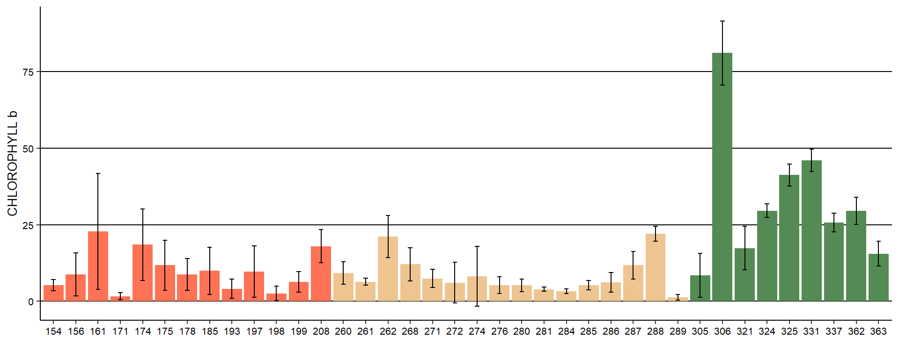
## Linear mixed model fit by REML. t-tests use Satterthwaite's method ['lmerModLmerTest']
## Formula: sqrt(clob) ~ 1 + (1 | site/phenotype)
## Data: datavqclob
##
## REML criterion at convergence: 470.6
##
## Scaled residuals:
## Min 1Q Median 3Q Max
## -2.3648 -0.5074 -0.0498 0.4453 3.1731
##
## Random effects:
## Groups Name Variance Std.Dev.
## phenotype:site (Intercept) 1.3398 1.1575
## site (Intercept) 2.2256 1.4918
## Residual 0.7311 0.8551
## Number of obs: 152, groups: phenotype:site, 38; site, 3
##
## Fixed effects:
## Estimate Std. Error df t value Pr(>|t|)
## (Intercept) 3.6231 0.8855 1.9646 4.092 0.0565 .
## ---
## Signif. codes: 0 '***' 0.001 '**' 0.01 '*' 0.05 '.' 0.1 ' ' 1## [1] 17.01659## [1] 31.18273## [1] 51.80069## # Intraclass Correlation Coefficient
##
## Adjusted ICC: 0.830
## Conditional ICC: 0.830CAROTENOIDES 2019
## site phenotype N caro sd se ci
## 1 concordia 154 4 19.834715 1.2210009 0.6105004 1.9428849
## 2 concordia 156 4 12.687223 3.9083389 1.9541694 6.2190393
## 3 concordia 161 4 17.586913 4.2735083 2.1367542 6.8001054
## 4 concordia 171 4 15.982152 1.4782555 0.7391277 2.3522343
## 5 concordia 174 4 18.768288 3.7113618 1.8556809 5.9056048
## 6 concordia 175 4 17.133332 2.1839720 1.0919860 3.4751869
## 7 concordia 178 4 8.139500 1.3290989 0.6645494 2.1148929
## 8 concordia 185 4 11.414675 5.8930489 2.9465245 9.3771559
## 9 concordia 193 4 14.349975 3.0244870 1.5122435 4.8126337
## 10 concordia 197 4 11.193607 2.3676687 1.1838344 3.7674893
## 11 concordia 198 4 11.723097 5.5921629 2.7960814 8.8983790
## 12 concordia 199 4 17.498673 2.3384400 1.1692200 3.7209798
## 13 concordia 208 4 10.687436 1.7221287 0.8610644 2.7402911
## 14 palmar 260 4 11.124765 0.5480597 0.2740299 0.8720853
## 15 palmar 261 4 15.741141 2.4261275 1.2130638 3.8605103
## 16 palmar 262 4 15.546187 4.4126773 2.2063387 7.0215543
## 17 palmar 268 4 11.248776 1.3782679 0.6891339 2.1931318
## 18 palmar 271 4 9.546613 2.6310718 1.3155359 4.1866224
## 19 palmar 272 4 18.010451 6.0302308 3.0151154 9.5954429
## 20 palmar 274 4 17.519655 2.5524924 1.2762462 4.0615850
## 21 palmar 276 4 16.681630 3.5688760 1.7844380 5.6788781
## 22 palmar 280 4 12.375043 1.8494502 0.9247251 2.9428879
## 23 palmar 281 4 15.348020 2.3228954 1.1614477 3.6962450
## 24 palmar 284 4 16.419127 1.8282832 0.9141416 2.9092065
## 25 palmar 285 4 16.684666 5.2040882 2.6020441 8.2808656
## 26 palmar 286 4 10.494109 2.5663146 1.2831573 4.0835793
## 27 palmar 287 4 12.977543 2.1545712 1.0772856 3.4284035
## 28 palmar 288 4 23.202599 1.5416946 0.7708473 2.4531801
## 29 palmar 289 4 15.269497 2.1417549 1.0708775 3.4080100
## 30 gualeguaychu 305 4 15.796680 4.3160938 2.1580469 6.8678684
## 31 gualeguaychu 306 4 24.518254 3.4845320 1.7422660 5.5446680
## 32 gualeguaychu 321 4 8.987936 2.0842230 1.0421115 3.3164639
## 33 gualeguaychu 324 4 14.123175 1.7451552 0.8725776 2.7769313
## 34 gualeguaychu 325 4 12.539304 1.5811135 0.7905567 2.5159044
## 35 gualeguaychu 331 4 14.056373 0.6912208 0.3456104 1.0998865
## 36 gualeguaychu 337 4 8.403775 1.1936653 0.5968326 1.8993878
## 37 gualeguaychu 362 4 12.591160 2.3567830 1.1783915 3.7501676
## 38 gualeguaychu 363 4 11.467713 0.5488292 0.2744146 0.8733097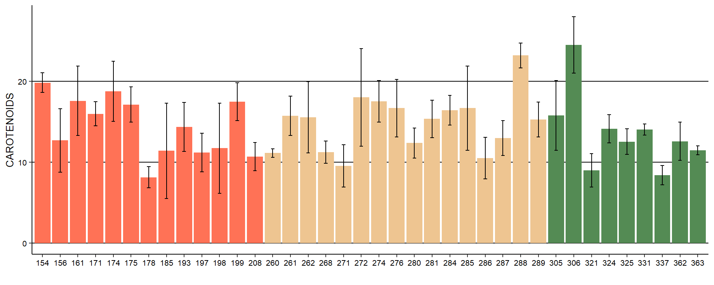
## Linear mixed model fit by REML. t-tests use Satterthwaite's method ['lmerModLmerTest']
## Formula: (caro) ~ 1 + (1 | site/phenotype)
## Data: datavqcaro
##
## REML criterion at convergence: 834.1
##
## Scaled residuals:
## Min 1Q Median 3Q Max
## -2.3750 -0.6103 -0.1193 0.4037 2.7758
##
## Random effects:
## Groups Name Variance Std.Dev.
## phenotype:site (Intercept) 12.092 3.477
## site (Intercept) 0.000 0.000
## Residual 9.017 3.003
## Number of obs: 152, groups: phenotype:site, 38; site, 3
##
## Fixed effects:
## Estimate Std. Error df t value Pr(>|t|)
## (Intercept) 14.4125 0.6144 37.0001 23.46 <2e-16 ***
## ---
## Signif. codes: 0 '***' 0.001 '**' 0.01 '*' 0.05 '.' 0.1 ' ' 1
## optimizer (nloptwrap) convergence code: 0 (OK)
## boundary (singular) fit: see ?isSingular## [1] 41.8464## [1] 58.1536## [1] 2.599266e-07## [1] 0.581536att 2019
## site phenotype N att sd se ci
## 1 concordia 154 4 1.840000 0.31624463 0.15812232 0.5032158
## 2 concordia 156 3 1.802667 0.16421125 0.09480741 0.4079233
## 3 concordia 161 4 1.920000 0.90055983 0.45027991 1.4329916
## 4 concordia 171 4 2.453333 0.71903145 0.35951572 1.1441395
## 5 concordia 174 4 1.845333 0.48538217 0.24269109 0.7723513
## 6 concordia 175 1 1.305600 NA NA NaN
## 7 concordia 178 4 1.746667 0.78414511 0.39207256 1.2477499
## 8 concordia 185 4 0.902400 0.31025151 0.15512576 0.4936794
## 9 concordia 193 4 1.871200 0.28690012 0.14345006 0.4565221
## 10 concordia 197 3 1.634702 0.04384575 0.02531436 0.1089189
## 11 concordia 198 4 2.144000 0.50774230 0.25387115 0.8079313
## 12 concordia 199 4 1.893600 0.17962568 0.08981284 0.2858245
## 13 concordia 208 0 NaN NA NA NaN
## 14 palmar 260 4 1.721600 0.62073280 0.31036640 0.9877244
## 15 palmar 261 2 1.414933 0.05053456 0.03573333 0.4540351
## 16 palmar 262 1 0.780800 NA NA NaN
## 17 palmar 268 4 1.755467 0.21173512 0.10586756 0.3369178
## 18 palmar 271 3 2.020267 0.25346298 0.14633692 0.6296370
## 19 palmar 272 3 1.907200 0.24813932 0.14326330 0.6164122
## 20 palmar 274 1 1.393067 NA NA NaN
## 21 palmar 276 4 1.496533 0.20456653 0.10228327 0.3255110
## 22 palmar 280 1 2.089600 NA NA NaN
## 23 palmar 281 0 NaN NA NA NaN
## 24 palmar 284 2 2.704000 0.58378736 0.41280000 5.2451213
## 25 palmar 285 4 1.712000 0.16068122 0.08034061 0.2556797
## 26 palmar 286 4 1.792533 0.73440058 0.36720029 1.1685952
## 27 palmar 287 4 1.519467 0.15481372 0.07740686 0.2463432
## 28 palmar 288 1 1.590400 NA NA NaN
## 29 palmar 289 3 1.580089 0.12873272 0.07432387 0.3197898
## 30 gualeguaychu 305 4 1.737600 0.19910222 0.09955111 0.3168161
## 31 gualeguaychu 306 0 NaN NA NA NaN
## 32 gualeguaychu 321 2 1.152000 0.01508495 0.01066667 0.1355329
## 33 gualeguaychu 324 0 NaN NA NA NaN
## 34 gualeguaychu 325 1 0.640000 NA NA NaN
## 35 gualeguaychu 331 1 0.688640 NA NA NaN
## 36 gualeguaychu 337 0 NaN NA NA NaN
## 37 gualeguaychu 362 0 NaN NA NA NaN
## 38 gualeguaychu 363 1 0.908800 NA NA NaN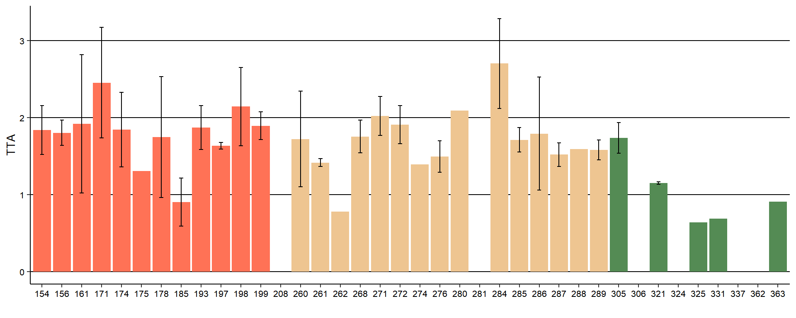
## Linear mixed model fit by REML. t-tests use Satterthwaite's method ['lmerModLmerTest']
## Formula: log(att) ~ 1 + (1 | site/phenotype)
## Data: datavqatt
##
## REML criterion at convergence: 52
##
## Scaled residuals:
## Min 1Q Median 3Q Max
## -2.87344 -0.33210 -0.06946 0.45999 2.11310
##
## Random effects:
## Groups Name Variance Std.Dev.
## phenotype:site (Intercept) 0.04210 0.2052
## site (Intercept) 0.05603 0.2367
## Residual 0.06721 0.2593
## Number of obs: 93, groups: phenotype:site, 32; site, 3
##
## Fixed effects:
## Estimate Std. Error df t value Pr(>|t|)
## (Intercept) 0.3806 0.1468 1.6860 2.594 0.145## [1] 40.6509## [1] 25.46126## [1] 33.88784## # Intraclass Correlation Coefficient
##
## Adjusted ICC: 0.593
## Conditional ICC: 0.593ratio 2019
## site phenotype N ratio sd se ci
## 1 concordia 154 4 5.618262 1.37745929 0.68872965 2.1918451
## 2 concordia 156 3 4.036934 0.80780850 0.46638845 2.0067076
## 3 concordia 161 4 4.814416 1.49021879 0.74510939 2.3712706
## 4 concordia 171 4 4.498161 1.02928139 0.51464069 1.6378164
## 5 concordia 174 4 3.895553 0.75811697 0.37905848 1.2063333
## 6 concordia 175 1 6.306168 NA NA NaN
## 7 concordia 178 4 8.104363 5.02729740 2.51364870 7.9995520
## 8 concordia 185 4 8.054675 1.48378657 0.74189328 2.3610355
## 9 concordia 193 4 4.873747 0.73430968 0.36715484 1.1684506
## 10 concordia 197 3 6.124947 0.46236170 0.26694465 1.1485701
## 11 concordia 198 4 5.152203 1.44336302 0.72168151 2.2967127
## 12 concordia 199 4 4.868926 0.84477953 0.42238976 1.3442327
## 13 concordia 208 0 NaN NA NA NaN
## 14 palmar 260 4 4.889863 1.24580438 0.62290219 1.9823528
## 15 palmar 261 2 5.827956 0.50799374 0.35920582 4.5641427
## 16 palmar 262 1 9.477459 NA NA NaN
## 17 palmar 268 4 4.204373 0.52030628 0.26015314 0.8279234
## 18 palmar 271 3 4.209600 0.51639004 0.29813793 1.2827840
## 19 palmar 272 3 5.264302 0.61251381 0.35363501 1.5215687
## 20 palmar 274 1 5.647014 NA NA NaN
## 21 palmar 276 4 5.966830 0.59835751 0.29917875 0.9521203
## 22 palmar 280 1 4.801557 NA NA NaN
## 23 palmar 281 0 NaN NA NA NaN
## 24 palmar 284 2 3.918931 0.07465146 0.05278656 0.6707168
## 25 palmar 285 4 3.994506 0.44429417 0.22214708 0.7069712
## 26 palmar 286 4 4.278852 1.15410146 0.57705073 1.8364330
## 27 palmar 287 4 4.509827 0.52593130 0.26296565 0.8368741
## 28 palmar 288 1 5.973340 NA NA NaN
## 29 palmar 289 3 5.465392 0.75106278 0.43362630 1.8657434
## 30 gualeguaychu 305 4 3.444459 0.26640938 0.13320469 0.4239168
## 31 gualeguaychu 306 0 NaN NA NA NaN
## 32 gualeguaychu 321 2 7.726357 0.10117332 0.07154034 0.9090062
## 33 gualeguaychu 324 0 NaN NA NA NaN
## 34 gualeguaychu 325 1 13.880208 NA NA NaN
## 35 gualeguaychu 331 1 6.002169 NA NA NaN
## 36 gualeguaychu 337 0 NaN NA NA NaN
## 37 gualeguaychu 362 0 NaN NA NA NaN
## 38 gualeguaychu 363 1 8.729460 NA NA NaN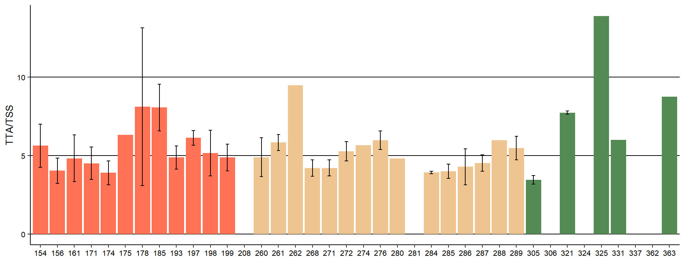
## Linear mixed model fit by REML. t-tests use Satterthwaite's method ['lmerModLmerTest']
## Formula: log(ratio) ~ 1 + (1 | site/phenotype)
## Data: datavqratio
##
## REML criterion at convergence: 34.4
##
## Scaled residuals:
## Min 1Q Median 3Q Max
## -1.9857 -0.5413 0.0132 0.5607 3.6159
##
## Random effects:
## Groups Name Variance Std.Dev.
## phenotype:site (Intercept) 0.050028 0.2237
## site (Intercept) 0.007904 0.0889
## Residual 0.052107 0.2283
## Number of obs: 93, groups: phenotype:site, 32; site, 3
##
## Fixed effects:
## Estimate Std. Error df t value Pr(>|t|)
## (Intercept) 1.68194 0.07201 0.88999 23.36 0.0379 *
## ---
## Signif. codes: 0 '***' 0.001 '**' 0.01 '*' 0.05 '.' 0.1 ' ' 1## [1] 47.35334## [1] 45.46408## [1] 7.182585## # Intraclass Correlation Coefficient
##
## Adjusted ICC: 0.526
## Conditional ICC: 0.526brix 2019
## site phenotype N brix sd se ci
## 1 concordia 154 4 10.150000 2.2397917 1.1198958 3.5640083
## 2 concordia 156 3 7.233333 1.1930353 0.6887993 2.9636641
## 3 concordia 161 4 8.250000 1.3304135 0.6652067 2.1169847
## 4 concordia 171 4 10.725000 2.2691775 1.1345888 3.6107678
## 5 concordia 174 4 6.941667 0.8736365 0.4368183 1.3901506
## 6 concordia 175 1 8.233333 NA NA NaN
## 7 concordia 178 4 11.475000 2.0216193 1.0108096 3.2168474
## 8 concordia 185 4 7.600000 3.6204154 1.8102077 5.7608887
## 9 concordia 193 4 9.041667 1.2971122 0.6485561 2.0639949
## 10 concordia 197 3 10.011111 0.7676322 0.4431927 1.9069042
## 11 concordia 198 4 10.516667 0.8284300 0.4142150 1.3182170
## 12 concordia 199 4 9.141667 1.1663095 0.5831547 1.8558586
## 13 concordia 208 0 NaN NA NA NaN
## 14 palmar 260 4 7.841667 1.3420203 0.6710102 2.1354538
## 15 palmar 261 2 8.233333 0.4242641 0.3000000 3.8118614
## 16 palmar 262 1 7.400000 NA NA NaN
## 17 palmar 268 4 7.350000 0.9635967 0.4817983 1.5332973
## 18 palmar 271 3 8.422222 0.2834967 0.1636769 0.7042448
## 19 palmar 272 3 9.955556 0.7784124 0.4494166 1.9336837
## 20 palmar 274 1 7.866667 NA NA NaN
## 21 palmar 276 4 8.841667 0.4540966 0.2270483 0.7225690
## 22 palmar 280 1 10.033333 NA NA NaN
## 23 palmar 281 0 NaN NA NA NaN
## 24 palmar 284 2 10.575000 2.0859650 1.4750000 18.7416520
## 25 palmar 285 4 6.811083 0.6800508 0.3400254 1.0821126
## 26 palmar 286 4 7.200000 1.5660755 0.7830378 2.4919757
## 27 palmar 287 4 6.908333 1.5053915 0.7526958 2.3954139
## 28 palmar 288 1 9.500000 NA NA NaN
## 29 palmar 289 3 8.577778 0.6274581 0.3622631 1.5586924
## 30 gualeguaychu 305 4 6.016667 1.1003366 0.5501683 1.7508812
## 31 gualeguaychu 306 0 NaN NA NA NaN
## 32 gualeguaychu 321 2 8.900000 0.0000000 0.0000000 0.0000000
## 33 gualeguaychu 324 1 6.466667 NA NA NaN
## 34 gualeguaychu 325 1 8.883333 NA NA NaN
## 35 gualeguaychu 331 1 4.133333 NA NA NaN
## 36 gualeguaychu 337 0 NaN NA NA NaN
## 37 gualeguaychu 362 0 NaN NA NA NaN
## 38 gualeguaychu 363 1 7.933333 NA NA NaN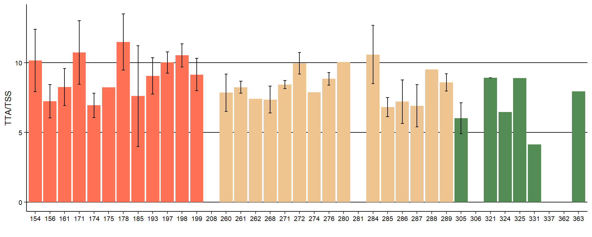
## Linear mixed model fit by REML. t-tests use Satterthwaite's method ['lmerModLmerTest']
## Formula: (brix) ~ 1 + (1 | site/phenotype)
## Data: datavqbrix
##
## REML criterion at convergence: 374.2
##
## Scaled residuals:
## Min 1Q Median 3Q Max
## -3.3527 -0.4621 -0.1121 0.5034 2.4967
##
## Random effects:
## Groups Name Variance Std.Dev.
## phenotype:site (Intercept) 1.1588 1.0765
## site (Intercept) 0.7452 0.8633
## Residual 2.2462 1.4987
## Number of obs: 94, groups: phenotype:site, 33; site, 3
##
## Fixed effects:
## Estimate Std. Error df t value Pr(>|t|)
## (Intercept) 8.2540 0.5702 1.6620 14.48 0.00959 **
## ---
## Signif. codes: 0 '***' 0.001 '**' 0.01 '*' 0.05 '.' 0.1 ' ' 1## [1] 54.12199## [1] 27.92185## [1] 17.95615## # Intraclass Correlation Coefficient
##
## Adjusted ICC: 0.459
## Conditional ICC: 0.459Tabla resumen
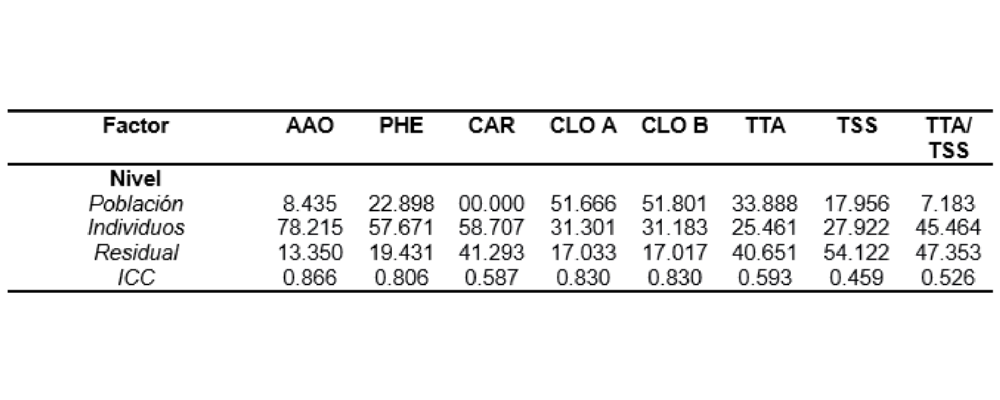
Boxplot y dispersión de concentración de fenoles de las tres poblaciones para 2019 y 2021
## year site N fen sd se ci
## 1 2019 concordia 51 659.0378 619.9453 86.80971 174.36242
## 2 2019 palmar 64 423.2059 182.6954 22.83693 45.63596
## 3 2019 gualeguaychu 36 1127.9322 823.4330 137.23883 278.60964
## 4 2021 concordia 42 1007.6210 656.1493 101.24604 204.47052
## 5 2021 palmar 68 445.3903 237.7212 28.82793 57.54080
## 6 2021 gualeguaychu 64 528.2487 325.3744 40.67180 81.27610## year site N aao sd se ci
## 1 2019 concordia 52 82.11404 21.50802 2.982625 5.987871
## 2 2019 palmar 64 73.85234 24.26006 3.032508 6.059984
## 3 2019 gualeguaychu 36 81.03861 20.38576 3.397627 6.897550
## 4 2021 concordia 44 89.96409 13.45100 2.027814 4.089477
## 5 2021 palmar 68 78.45574 21.23754 2.575430 5.140580
## 6 2021 gualeguaychu 64 84.95266 18.27536 2.284420 4.565048*With standar desviation
Individuos de concordia en ambos años.
## year phenotype N fen sd se ci
## 1 2019 154 4 330.6050 84.89474 42.44737 135.08647
## 2 2019 156 4 266.1275 32.92447 16.46223 52.39018
## 3 2019 161 4 308.8750 111.90871 55.95436 178.07173
## 4 2019 171 4 369.2500 117.61965 58.80983 187.15911
## 5 2019 174 4 299.3925 126.00040 63.00020 200.49475
## 6 2019 175 3 1763.0133 1454.05849 839.50106 3612.08154
## 7 2019 178 4 1284.0950 482.90971 241.45486 768.41712
## 8 2019 185 4 973.5525 261.33124 130.66562 415.83633
## 9 2019 193 4 850.8250 387.56623 193.78312 616.70437
## 10 2019 197 4 492.7550 343.45082 171.72541 546.50689
## 11 2019 198 4 215.3775 76.91037 38.45518 122.38156
## 12 2019 199 4 190.3225 58.31186 29.15593 92.78718
## 13 2019 208 4 1499.2950 338.66293 169.33146 538.88829
## 14 2021 154 4 950.6225 69.13260 34.56630 110.00540
## 15 2021 156 0 NaN NA NA NaN
## 16 2021 161 4 789.5025 89.95115 44.97557 143.13235
## 17 2021 171 4 785.0025 149.56882 74.78441 237.99736
## 18 2021 174 4 1651.4325 205.43136 102.71568 326.88714
## 19 2021 193 4 2303.2975 380.39872 190.19936 605.29926
## 20 2021 197 2 1990.6350 684.65614 484.12500 6151.39137
## 21 2021 198 4 326.1475 53.62782 26.81391 85.33383
## 22 2021 199 4 455.6700 65.55308 32.77654 104.30957
## 23 2021 221 4 998.3275 114.89294 57.44647 182.82031
## 24 2021 222 4 355.4475 45.40550 22.70275 72.25028
## 25 2021 223 4 969.2525 565.17813 282.58907 899.32453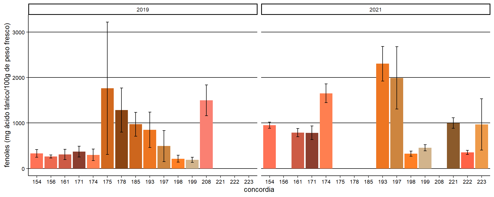
Individuos del palmar en ambos años.
## year phenotype N fen sd se ci
## 1 2019 260 4 355.7675 22.768225 11.384113 36.22933
## 2 2019 261 4 370.6275 77.553674 38.776837 123.40520
## 3 2019 262 4 441.8700 63.749832 31.874916 101.44021
## 4 2019 268 4 346.6375 111.753132 55.876566 177.82417
## 5 2019 271 4 314.4650 56.058778 28.029389 89.20203
## 6 2019 272 4 451.9025 121.916571 60.958286 193.99647
## 7 2019 274 4 589.1225 306.998501 153.499251 488.50312
## 8 2019 276 4 323.5975 78.728099 39.364050 125.27397
## 9 2019 280 4 434.6500 59.125207 29.562604 94.08140
## 10 2019 281 4 874.8175 100.545689 50.272844 159.99063
## 11 2019 284 4 567.2000 210.443439 105.221720 334.86247
## 12 2019 285 4 424.0850 21.198260 10.599130 33.73116
## 13 2019 286 4 393.7750 58.978429 29.489214 93.84784
## 14 2019 287 4 207.3425 24.351785 12.175892 38.74912
## 15 2019 288 4 425.9425 31.453243 15.726621 50.04913
## 16 2019 289 4 249.4925 88.729860 44.364930 141.18901
## 17 2021 236 4 421.2725 12.197479 6.098739 19.40891
## 18 2021 260 4 284.5275 63.012622 31.506311 100.26714
## 19 2021 261 4 335.9100 68.907876 34.453938 109.64781
## 20 2021 262 4 310.2200 127.267451 63.633726 202.51092
## 21 2021 268 4 276.6675 34.524250 17.262125 54.93579
## 22 2021 271 4 260.5350 6.874031 3.437015 10.93812
## 23 2021 272 4 539.7550 131.905785 65.952893 209.89154
## 24 2021 274 4 584.4500 144.715608 72.357804 230.27483
## 25 2021 276 4 311.0725 18.627496 9.313748 29.64050
## 26 2021 280 4 379.6525 84.118421 42.059210 133.85118
## 27 2021 284 4 451.4250 70.960094 35.480047 112.91334
## 28 2021 285 4 368.1900 16.745939 8.372969 26.64653
## 29 2021 286 4 1056.8950 117.357078 58.678539 186.74130
## 30 2021 287 4 851.4600 150.663774 75.331887 239.73969
## 31 2021 288 4 244.8225 72.430069 36.215035 115.25240
## 32 2021 289 4 665.2450 96.591633 48.295817 153.69884
## 33 2021 290 4 229.5350 19.931948 9.965974 31.71618### Individuos de gualeguaychu en ambos años.
## year phenotype N fen sd se ci
## 1 2019 305 4 229.7450 41.040167 20.520083 65.304064
## 2 2019 306 4 2252.8675 1020.900175 510.450087 1624.479994
## 3 2019 321 4 488.2625 68.350438 34.175219 108.760800
## 4 2019 324 4 1071.5450 534.938400 267.469200 851.206367
## 5 2019 325 4 1528.2750 140.208765 70.104382 223.103433
## 6 2019 331 4 628.9350 91.518731 45.759365 145.626723
## 7 2019 337 4 2352.1350 419.939370 209.969685 668.217248
## 8 2019 362 4 997.4425 315.625506 157.812753 502.230612
## 9 2019 363 4 602.1825 154.222112 77.111056 245.401795
## 10 2021 305 4 240.1525 2.008472 1.004236 3.195927
## 11 2021 306 4 1002.5725 111.132744 55.566372 176.836996
## 12 2021 321 4 269.6650 19.722938 9.861469 31.383596
## 13 2021 324 4 335.4900 25.386369 12.693185 40.395378
## 14 2021 325 4 409.3825 28.475124 14.237562 45.310277
## 15 2021 331 4 422.3300 59.653065 29.826533 94.921339
## 16 2021 337 4 509.3900 30.046214 15.023107 47.810232
## 17 2021 348 4 272.0000 10.128399 5.064200 16.116543
## 18 2021 357 4 1075.4725 302.897132 151.448566 481.976930
## 19 2021 362 4 339.5225 31.547011 15.773505 50.198334
## 20 2021 363 4 476.2675 122.300213 61.150106 194.606930
## 21 2021 364 4 541.8775 74.466894 37.233447 118.493446
## 22 2021 390 4 438.6850 43.291836 21.645918 68.886972
## 23 2021 392 4 305.7650 60.377478 30.188739 96.074041
## 24 2021 395 4 1293.8225 317.784055 158.892028 505.665347
## 25 2021 396 4 519.5850 68.453826 34.226913 108.925313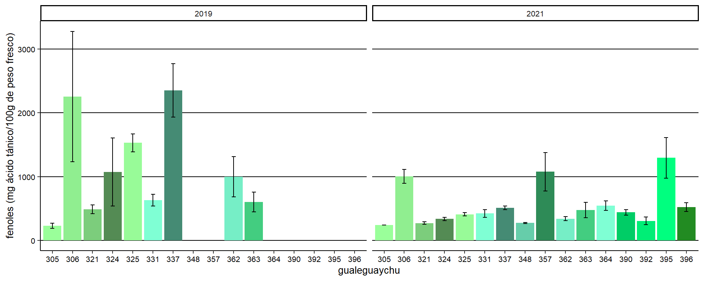
Tabla descriptiva
## year N fen sd se ci
## 1 2019 151 670.8720 613.7546 49.94665 98.68984
## 2 2021 174 611.5778 462.5759 35.06779 69.21580Estadística inferencial
Comparación interpoblacional e intrapoblacional para los años 2019 y 2021.
- Diseño anidado: Población(Genotipo).
- Análisis univariado de la variable concentración de fenoles.
- Distribución de probabilidades: Normal.
- Análisis de componentes de varianza.
- factores aleatorios: Población y Genotipo
- factores fijos: año
Resumen del modelo
## Linear mixed model fit by REML. t-tests use Satterthwaite's method ['lmerModLmerTest']
## Formula: log(fen) ~ 1 + (1 | site/phenotype) + (1 | year)
## Data: datavqfen
##
## REML criterion at convergence: 530
##
## Scaled residuals:
## Min 1Q Median 3Q Max
## -2.41668 -0.54237 -0.05945 0.61911 2.71763
##
## Random effects:
## Groups Name Variance Std.Dev.
## phenotype:site (Intercept) 0.1976011 0.44452
## site (Intercept) 0.0508689 0.22554
## year (Intercept) 0.0001794 0.01339
## Residual 0.2199079 0.46894
## Number of obs: 325, groups: phenotype:site, 50; site, 3; year, 2
##
## Fixed effects:
## Estimate Std. Error df t value Pr(>|t|)
## (Intercept) 6.2623 0.1475 2.0422 42.45 0.000487 ***
## ---
## Signif. codes: 0 '***' 0.001 '**' 0.01 '*' 0.05 '.' 0.1 ' ' 1Supuestos del modelo
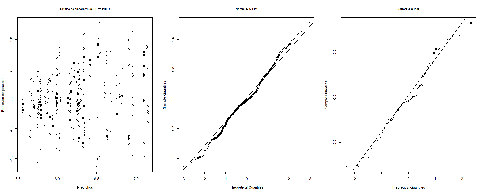
Test de normalidad para muestras biológicas (frutos)
##
## Shapiro-Wilk normality test
##
## data: e
## W = 0.99172, p-value = 0.06615Test de normalidad para genotipos
##
## Shapiro-Wilk normality test
##
## data: alfai
## W = 0.97597, p-value = 0.397Conclusiones
## We fitted a constant (intercept-only) linear mixed model (estimated using REML and nloptwrap optimizer) to predict fen (formula: log(fen) ~ 1). The model included phenotype, site and year as random effects (formula: list(~1 | phenotype:site, ~1 | site, ~1 | year)). . The model's intercept is at 6.26 (95% CI [5.97, 6.55], t(320) = 42.45, p < .001). Within this model:
##
## - ()
##
## Standardized parameters were obtained by fitting the model on a standardized version of the dataset. 95% Confidence Intervals (CIs) and p-values were computed usingEl test de Wald (p=0.0594) arroja que no hay diferencias estadísticas significativas entre años.
ICC del modelo
## # Intraclass Correlation Coefficient
##
## Adjusted ICC: 0.531
## Conditional ICC: 0.531## [1] 0.5025108## [1] 0.4520021## [1] 0.04548715—-> 50,3% entre muestras de una misma phenotypeesión. —-> 45,2% entre phenotypeesiones de una misma siteión. —-> 4,5% entre siteiones.
ICC del modelo = 0.497
| log(fen) | |||
|---|---|---|---|
| Predictors | Estimates | CI | p |
| (Intercept) | 6.26 | 5.97 – 6.55 | <0.001 |
| Random Effects | |||
| σ2 | 0.22 | ||
| τ00 phenotype:site | 0.20 | ||
| τ00 site | 0.05 | ||
| τ00 year | 0.00 | ||
| ICC | 0.53 | ||
| N phenotype | 50 | ||
| N site | 3 | ||
| N year | 2 | ||
| Observations | 325 | ||
| Marginal R2 / Conditional R2 | 0.000 / 0.531 | ||
Acidez total titulable (att)
## year site N ac sd se ci
## 1 2019 concordia 47 1.732340 0.6219542 0.09072134 0.1826126
## 2 2019 palmar 42 1.719524 0.4440828 0.06852346 0.1383859
## 3 2019 gualeguaychu 9 1.255556 0.4719934 0.15733114 0.3628063
## 4 2021 concordia 20 2.515500 0.7505119 0.16781957 0.3512504
## 5 2021 palmar 25 2.088000 1.1008784 0.22017569 0.4544203
## 6 2021 gualeguaychu 21 2.038095 0.7749040 0.16909791 0.3527321## site N ac sd se ci
## 1 concordia 20 2.515500 0.7505119 0.1678196 0.3512504
## 2 palmar 25 2.088000 1.1008784 0.2201757 0.4544203
## 3 gualeguaychu 21 2.038095 0.7749040 0.1690979 0.3527321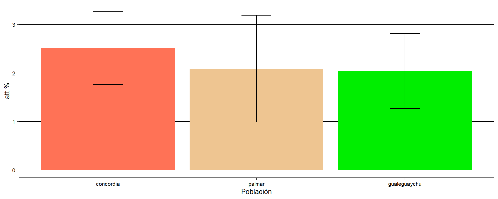
## Analysis of Variance Table
##
## Response: ac
## Df Sum Sq Mean Sq F value Pr(>F)
## site 2 0.686 0.34296 0.5871 0.5571
## Residuals 161 94.051 0.58417brix
## phenotype year N brix sd se ci
## 1 154 2019 4 10.150000 2.23979166 1.11989583 3.5640083
## 2 156 2019 3 7.233333 1.19303534 0.68879928 2.9636641
## 3 156 2021 4 4.775000 0.49642052 0.24821026 0.7899158
## 4 161 2019 4 8.250000 1.33041347 0.66520673 2.1169847
## 5 161 2021 1 10.300000 NA NA NaN
## 6 171 2019 4 10.725000 2.26917753 1.13458877 3.6107678
## 7 171 2021 4 11.375000 1.92937814 0.96468907 3.0700712
## 8 174 2019 4 6.950000 0.85829288 0.42914644 1.3657355
## 9 175 2019 1 8.200000 NA NA NaN
## 10 178 2019 4 11.450000 2.00748599 1.00374299 3.1943582
## 11 185 2019 4 7.600000 3.63318042 1.81659021 5.7812008
## 12 193 2019 4 9.050000 1.30766968 0.65383484 2.0807943
## 13 197 2019 3 10.033333 0.75055535 0.43333333 1.8644828
## 14 198 2019 4 10.525000 0.83815273 0.41907637 1.3336880
## 15 198 2021 4 11.125000 0.72743843 0.36371921 1.1575169
## 16 199 2019 4 9.125000 1.16153634 0.58076817 1.8482635
## 17 199 2021 1 12.100000 NA NA NaN
## 18 208 2019 4 8.900000 1.33166562 0.66583281 2.1189772
## 19 221 2021 1 10.500000 NA NA NaN
## 20 222 2021 1 8.300000 NA NA NaN
## 21 223 2021 3 10.366667 1.92959409 1.11405166 4.7933774
## 22 236 2021 1 6.000000 NA NA NaN
## 23 260 2019 4 7.850000 1.33041347 0.66520673 2.1169847
## 24 260 2021 4 9.950000 1.62583312 0.81291656 2.5870633
## 25 261 2019 2 8.200000 0.42426407 0.30000000 3.8118614
## 26 261 2021 1 10.100000 NA NA NaN
## 27 262 2019 1 7.400000 NA NA NaN
## 28 262 2021 1 11.000000 NA NA NaN
## 29 268 2019 4 7.350000 0.96090235 0.48045118 1.5290101
## 30 268 2021 1 9.100000 NA NA NaN
## 31 271 2019 3 8.400000 0.26457513 0.15275252 0.6572411
## 32 271 2021 1 10.100000 NA NA NaN
## 33 272 2019 3 9.966667 0.76376262 0.44095855 1.8972915
## 34 272 2021 1 8.000000 NA NA NaN
## 35 274 2019 1 7.900000 NA NA NaN
## 36 274 2021 1 7.000000 NA NA NaN
## 37 276 2019 4 8.825000 0.43493295 0.21746647 0.6920754
## 38 276 2021 1 11.200000 NA NA NaN
## 39 280 2019 1 10.000000 NA NA NaN
## 40 280 2021 1 10.100000 NA NA NaN
## 41 284 2019 2 10.600000 2.12132034 1.50000000 19.0593071
## 42 284 2021 4 6.825000 0.98446263 0.49223131 1.5664997
## 43 285 2019 4 6.800000 0.66833126 0.33416563 1.0634642
## 44 285 2021 4 8.575000 0.55602758 0.27801379 0.8847640
## 45 286 2019 4 7.200000 1.58113883 0.79056942 2.5159447
## 46 286 2021 1 9.200000 NA NA NaN
## 47 287 2019 4 6.925000 1.52178623 0.76089312 2.4215015
## 48 287 2021 1 7.200000 NA NA NaN
## 49 288 2019 1 9.500000 NA NA NaN
## 50 288 2021 1 13.000000 NA NA NaN
## 51 289 2019 4 8.825000 0.67019898 0.33509949 1.0664361
## 52 289 2021 1 10.000000 NA NA NaN
## 53 290 2021 1 12.000000 NA NA NaN
## 54 305 2019 4 6.025000 1.08435849 0.54217924 1.7254563
## 55 305 2021 1 7.000000 NA NA NaN
## 56 306 2021 1 8.100000 NA NA NaN
## 57 321 2019 2 8.900000 0.00000000 0.00000000 0.0000000
## 58 321 2021 1 9.000000 NA NA NaN
## 59 324 2021 1 9.200000 NA NA NaN
## 60 325 2019 1 8.900000 NA NA NaN
## 61 325 2021 1 9.000000 NA NA NaN
## 62 331 2019 1 4.100000 NA NA NaN
## 63 331 2021 4 8.175000 0.09574271 0.04787136 0.1523480
## 64 337 2021 1 9.000000 NA NA NaN
## 65 348 2021 1 7.000000 NA NA NaN
## 66 357 2021 1 10.000000 NA NA NaN
## 67 362 2021 1 8.500000 NA NA NaN
## 68 363 2019 1 7.900000 NA NA NaN
## 69 363 2021 1 10.000000 NA NA NaN
## 70 390 2021 4 10.800000 0.54160256 0.27080128 0.8618105
## 71 392 2021 1 8.000000 NA NA NaN
## 72 395 2021 1 11.000000 NA NA NaN
## 73 396 2021 1 11.000000 NA NA NaN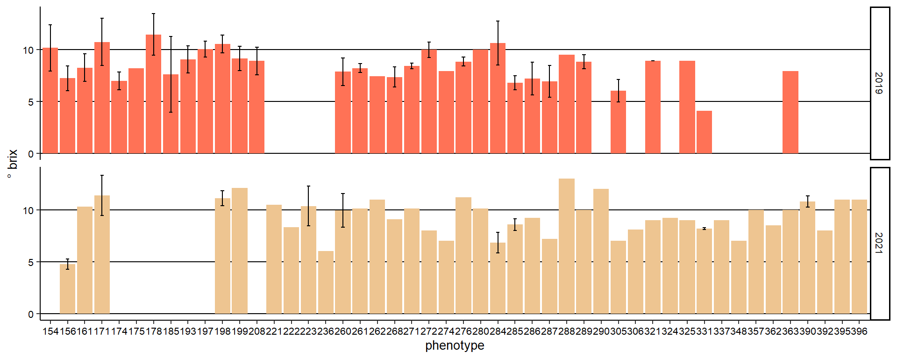
## phenotype N brix sd se ci
## 1 154 4 10.150000 2.23979166 1.11989583 3.5640083
## 2 156 7 5.828571 1.52458113 0.57623750 1.4100024
## 3 161 5 8.660000 1.47241299 0.65848311 1.8282422
## 4 171 8 11.050000 1.98062039 0.70025506 1.6558401
## 5 174 4 6.950000 0.85829288 0.42914644 1.3657355
## 6 175 1 8.200000 NA NA NaN
## 7 178 4 11.450000 2.00748599 1.00374299 3.1943582
## 8 185 4 7.600000 3.63318042 1.81659021 5.7812008
## 9 193 4 9.050000 1.30766968 0.65383484 2.0807943
## 10 197 3 10.033333 0.75055535 0.43333333 1.8644828
## 11 198 8 10.825000 0.79417522 0.28078334 0.6639471
## 12 199 5 9.720000 1.66793285 0.74592225 2.0710122
## 13 208 4 8.900000 1.33166562 0.66583281 2.1189772
## 14 221 1 10.500000 NA NA NaN
## 15 222 1 8.300000 NA NA NaN
## 16 223 3 10.366667 1.92959409 1.11405166 4.7933774
## 17 236 1 6.000000 NA NA NaN
## 18 260 8 8.900000 1.77522634 0.62763729 1.4841264
## 19 261 3 8.833333 1.13724814 0.65659052 2.8250810
## 20 262 2 9.200000 2.54558441 1.80000000 22.8711685
## 21 268 5 7.700000 1.14236597 0.51088159 1.4184347
## 22 271 4 8.825000 0.87702147 0.43851074 1.3955369
## 23 272 4 9.475000 1.16440256 0.58220128 1.8528243
## 24 274 2 7.450000 0.63639610 0.45000000 5.7177921
## 25 276 5 9.300000 1.12694277 0.50398413 1.3992843
## 26 280 2 10.050000 0.07071068 0.05000000 0.6353102
## 27 284 6 8.083333 2.29818769 0.93823120 2.4118001
## 28 285 8 7.687500 1.10639376 0.39116926 0.9249683
## 29 286 5 7.600000 1.63554272 0.73143694 2.0307945
## 30 287 5 6.980000 1.32363137 0.59194594 1.6435054
## 31 288 2 11.250000 2.47487373 1.75000000 22.2358583
## 32 289 5 9.060000 0.78294317 0.35014283 0.9721523
## 33 290 1 12.000000 NA NA NaN
## 34 305 5 6.220000 1.03537433 0.46303348 1.2855870
## 35 306 1 8.100000 NA NA NaN
## 36 321 3 8.933333 0.05773503 0.03333333 0.1434218
## 37 324 1 9.200000 NA NA NaN
## 38 325 2 8.950000 0.07071068 0.05000000 0.6353102
## 39 331 5 7.360000 1.82428068 0.81584312 2.2651436
## 40 337 1 9.000000 NA NA NaN
## 41 348 1 7.000000 NA NA NaN
## 42 357 1 10.000000 NA NA NaN
## 43 362 1 8.500000 NA NA NaN
## 44 363 2 8.950000 1.48492424 1.05000000 13.3415150
## 45 390 4 10.800000 0.54160256 0.27080128 0.8618105
## 46 392 1 8.000000 NA NA NaN
## 47 395 1 11.000000 NA NA NaN
## 48 396 1 11.000000 NA NA NaN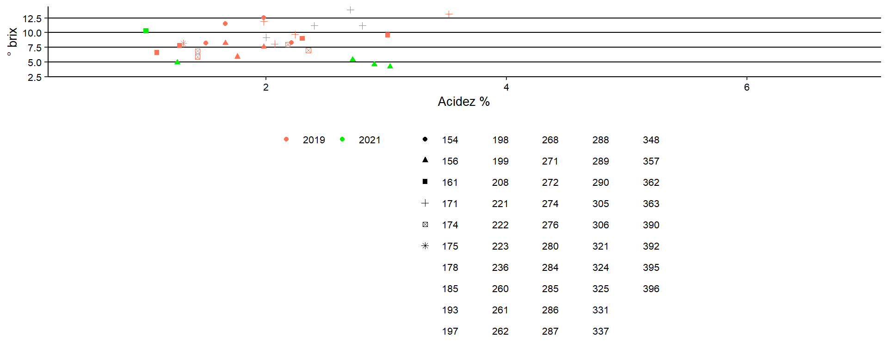